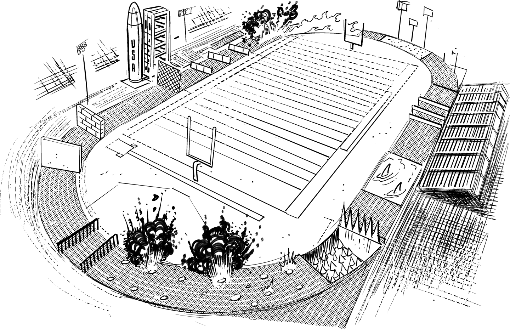

Sometimes Running in Circles Can Be Productive

In programming, an infinite loop is rarely a good thing (unless you are Apple, Inc., and your address is 1 Infinite Loop in Cupertino, California). But even Apple HQ appears to be moving off the infinite loop, which is a noteworthy feat in and of itself. In poorly run organizations (not Apple!) employees often make cynical remarks about how they run in circles and when the desired results aren’t achieved, management tells them to run faster. You surely don’t want to be part of that infinite loop!
There’s one loop, though, that’s a key element of most digital companies: the continuous learning loop. Because digital companies know well that control is an illusion (Chapter 27), they are addicted to rapid feedback. Eric Ries eternalized this concept in his book The Lean Startup1 as the Build-Measure-Learn cycle: a company builds a minimum viable product and launches it into production to measure user adoption and behavior. Based on the insights from live product usage, the company learns and refines the product. Jeff Sussna aptly describes the “learning” part of the cycle as “operate to learn”—the goal of operations isn’t to maintain the status quo but to deliver critical insights into making a better product.
The critical KPI for most digital companies is how much they can learn per dollar or time-unit spent, i.e., how many revolutions through the Build-Measure-Learn cycle they can make. The digital world has thus changed the nature of the game completely and it would be foolish at best (fatal at worst) to ignore this change.
Taking book authoring as an example: publishing Enterprise Integration Patterns took a year of writing, followed by some six months of editing and three months of production. While we had a feeling that the book might be a success, it wasn’t until another year later that we could measure the success in actual copies sold. So, making one-half revolution from Build to Measure took about four years! Completing the cycle, i.e., publishing a second edition, would have taken another 6 to 12 months. In comparison, I wrote the original version of this book as an ebook that was published while it was still a work in progress. The book sold several hundred copies before it was even done, and I received reader feedback by email and Twitter almost in real time as I was writing.
The same is true for many other industries: digital technology has made customer feedback immediate. This is a huge opportunity, but also a huge challenge as customers have learned to expect rapid changes based on their feedback. If I don’t post an update to my book in two or three weeks, people may worry that I might have given up on writing. Luckily, I find instant feedback (comments as well as purchases) hugely motivating, so I have been far more productive in writing this book than ever before.
Adopting learning as an organization’s key metric is good news for another reason. While many tasks are taken over by machines, learning how to build a product that excites users remains firmly in the hands of humans.
Unfortunately, traditional companies aren’t built for rapid feedback cycles. They often still separate run from change (Chapter 12) and assume a project is done by the time it reaches production. Launching a product is about the 120-degree mark in the innovation wheel of fortune, so making one-third of a single revolution counts for nothing if your competition is on its one-hundredth refinement.
What keeps traditional organizations from completing rapid learning cycles? Their structuring as a layered hierarchy: in a fairly static, slow-moving world, organizing into layers has distinct advantages; it allows a small group of people to steer a large organization without having to be involved in all details. Information that travels up is aggregated and translated for easy consumption by upper management. Such a setup works very well in large organizations, but has one fundamental disadvantage: it’s horribly slow to react to changes in the environment or to insights at the working level. It takes too much time for information to travel all the way up to make a decision because each “layer” in the organization brings communication overhead and requires a translation. Even if architects can ride the elevator (Chapter 1), it still takes time for decisions to trickle back down through a web of budgeting and steering processes. Once again, we aren’t talking about a difference of 10% but of factors in the hundreds or thousands: traditional organizations often run feedback cycles to the tune of 18 months while digital companies can do it in days or weeks.
Layered organizations benefit from separation of concerns. However, it becomes a liability in Economies of Speed.
In times when nearly every organization wants to become more “digital” and the technical platforms are readily available as open source or cloud services, building a fast-learning organization is a critical success factor.
With every revolution, the organization not only learns what features are most useful for the users, but the project team also learns how to build enticing user experiences, how to speed up development cycles, or how to scale the system to meet increasing demand. This learning cycle is critical for the organization’s digital transformation because it enables in-house innovation and rapid iterations.
Digital transformation begins with changing HR and recruiting practices.
Inversely, if corporate IT depends heavily on the work of external providers, which is rather common, the ones benefiting from this learning are the external consultants. Organizations should therefore place their internal staff inside the learning cycle and use external support mainly to coach or teach them. Taking this logic a step further, digital transformation begins with transforming HR and recruiting practices to hire qualified staff and to educate existing employees so that they can become part of the learning cycle.
To speed up the feedback engine you need to turn the organizational layer cake on its side by forming teams that carry full responsibility from product concept to technical implementation, operations, and refinement. Often such an approach carries the label of “tribes,” “feature teams,” or “DevOps,” which is associated with a “you build it, you run it” attitude. Doing so not only provides a direct feedback loop to the developers about the quality of their product (pagers going off in the middle of the night are a very immediate form of feedback), but it also scales the organization (Chapter 30) by removing unnecessary synchronization points: all relevant decisions can be made within the project team.
Running in independent teams that focus on rapid feedback has one other fundamental advantage: it brings the customer back into the picture. In the traditional pyramid of layered command-and-control, the customer is nowhere to be found—at best somewhere interacting with the lowest layer of the organization, far from where decisions are made and strategies are set. In contrast, “vertical” teams draw feedback and their energy directly from the customer.
The main challenge in assembling such teams is to get a complete range of skill sets into a compact team, ideally not exceeding the size of a “two-pizza team”; that is, one that can be fed by two large pizzas. This requires qualified staff, a willingness to collaborate across skill sets, and a low-friction environment. The Spotify team concepts2 of chapters and guilds are likely the most useful resource in this context.
If all control rests in the vertically integrated team, what ensures that these teams are still part of one company and for example use common branding and common infrastructure? It’s OK to have some pie crust on the vertical layer cake: for example, one at the top for branding and overall strategy and one at the bottom for common infrastructure that never sends a human to do a machine’s job (Chapter 13).
Once you have perfected the rapid Build-Measure-Learn feedback cycle, you may wonder how many revolutions you will need to make. In digital companies the feedback engine stops spinning only when the product is dead. That’s why, for once, it’s good to be part of an infinite loop.